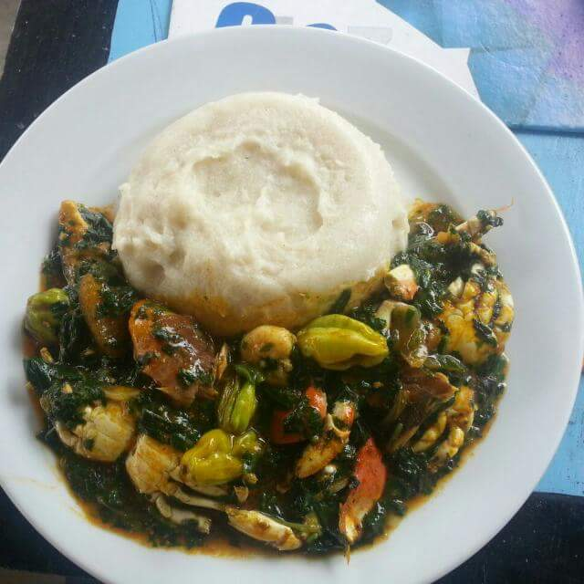

Ademe detsi

Description
Ademe detsi is the Ewe rendition of jute mallow soup in English.
It is a dish common to West Africa. Traditionally it is made with
a base of fish and seafood flavoured with fermented fish and lots
of onions, pepper and red palm oil. The main ingredient of this
dish is the jute mallow leaves that give this dish its
signature texture and taste.
Ingredients
- 2kg of Jute mallow leaves(ademe).
- 1 Salted fish
- 1 Medium sized onions
- Pepper
- 200g of Crab
- precooked meat of choice
- 1/2 cup of Red palm oil
- Salt
- 400ml Water
- Salt petre
- Seasoning
Steps
- Get fresh ademe(jute) leave from the market.
-
Sort out the leaves, eliminating diseased leaves and all other
non-jute leaves.
- Wash the sorted leaves and drain out the water.
- Chop the leaves into small pieces.
-
Peel the onion, wash and slice about half of
it unto the choped ademe leaves.
- Place a sauce pan on a fire of medium heat.
- Pour a little water into the pan (about 90ml of water).
-
Add about a quater tsp of salt petre, salted fish, powdered pepper,
and a seasoning of choice to the water. Cover the pan and leave on
fire to boil to form a soup base.
-
On boiling, add the choped ademe to the soup base and leave to boil.
-
At the first instance of boiling, beat the leaves with a
laddle to release the slim texture of the leaves.
- Allow to cook for 5 minutes, stirring intermittently
until a smooth viscous texture is achieved then add
the precooked meat, crab and any other protein of choice.
- Leave to cook for 5 minutes. Add a quarter cup of red palm oil.
Add enough salt to taste. Add fresh green pepper to ganish.
- Ademe detsi is ready to be served with Banku or Akple!